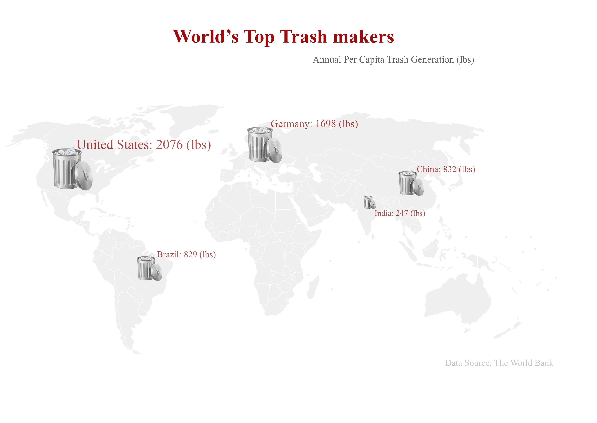

National Geographic recently publish an article shows how First world’s high-tech trash ends up in Africa and China. Those lead leaking trashes was burned or buried without any environmental concern. Meanwhile there is no article demonstrate how bad plastic recycling crisis is in China. Most west media assumes exporting plastic trash to China is helping China, because the world’s biggest factory demands large amount of raw material to make new garment. However, China is doing a big favor by bury rich counties’ trashes that is forbidden to be buried in their own land.
US. as the top trash maker used 700 plastic bottle every second, only 27% of them is recycled. According to EPA, only 4.3 percent of all plastic bag in the US were recycled in 2010, down almost 2% from the previous years. California tries to reduce plastic bad by requiring grocery store to replace recycling bins. However, this program only increases recycling by 2 % in 3 years. EPA says Plastic production has outpaced recycling for the past 50 years. Those plastic that pollutes soil and groundwater sources ends up in landfill will need 1,000 years to degraded.
Moreover, Plastic bags are dumped into ocean that may end up in our dinner. Ocean plastic has turned up literally everywhere. It has been found in the deep sea and buried in Arctic ice. Plastics pollution has a direct and deadly effect on wildlife. Thousands of seabirds and sea turtles, seals and other marine mammals are killed each year after ingesting plastic or getting entangled in it. Endangered wildlife like Hawaiian monk seals and Pacific loggerhead sea turtles are among nearly 300 species that eat and get caught in plastic litter.
p>
China imported more than half of all plastic bags for recycling, and those bags expose workers to toxic fume. Unrecyclable plastics were burned in the night, captured by the wind, floating on the breeze. The most striking about recycling is : there’s nothing green. It’s a dead zone. Meanwhile, America is keep dumping its trash in China, even it agreed on Basel Convention, which is an international treaty that was designed to reduce the movements of hazardous waste between nations, and specifically to prevent transfer of hazardous waste from developed to less developed countries

.
Why rich country throw their trash into China and Africa?
.
First, the most critical step in recycling is sorting trash by category, which is very labor intensive. China has one of the lowest labor price, also most recycling companies is family owned, means they don’t need to pay tax, health insurance and fine for polluting the environment or neglecting safety measures. Most worker are women and children who live in poor rural area, when their left home to seek better job in the city. A 70 years old woman says she can only make 100 US. Dollar in a month without rest, when average US. workers can make the same amount per day.
Second, There're only 7 kinds of plastic can be recycled. The thermosetting plastic unable to repeatedly by reheating molding. Therefore, most trash ends up in landfill that contaiminates environment. When rich countries ban burying trash,China’s environment protection law is not as strict as others,. A 2006 survey found that almost 10% of farmland was contaminated with heavy metals, such as cadmium. The country is chasing GDP growth while ignoring environmental degradation. The prime minister, Li Keqiang, said: “It is no good having prosperity and wealth while the environment deteriorates,”—but then said it was just as bad to have “poverty and backwardness in the midst of clear waters and verdant mountains.” Furthermore, water is too cheap, which is encouraging wasting of its most precious resource.
Third, the shipping cost between US. And China is almost nothing. Every day after tons of goods were sent from Hong Kong to Los Angeles, the ship companies sell the empty containers to the trash recycling companies as low as possible . Then they drop those trash in Honk Kong, and sell it to distributers who will drive it to mainland China. The last step costs a lot due to the high price of gas, but the whole process is as cheap as shipping from Los Angeles to New York.
Four key character:
Women and children are left home in poor village have to collect trashes in terrible environment. According to report, a 70 years old women attempted pour the liquid out of a plastic bottle, acid burned her whole hand. She said, "The smell is unbearable", and she is being pricked by needles all the time.
The US. recyclers are also struggling, because labor in China is too cheap, They can't compete when the free market is not fair. Mike Biddle, the founder and longtime CEO of a pioneering plastics-recycling company called MBA Polymers, said he'd like to create jobs in US., but he can’t compete with cheap and irresponsible recycling outside.
China begins to reject trash in 2013 by establishing “operation Green Fence” which isn't work very well. Trash smuggling only reduced by 14% to 8%, because China has long coastline and highly undeveloped law enforcement.
US. government ignores the large amount of trash exportation and its damage to China and Africa. World-renowned corporations such as American Standard, Panasonic, Pepsi, Nestle, and 3M cause substandard waste water and unauthorized construction activities in China that occurred in the absence of environmental impact assessments.